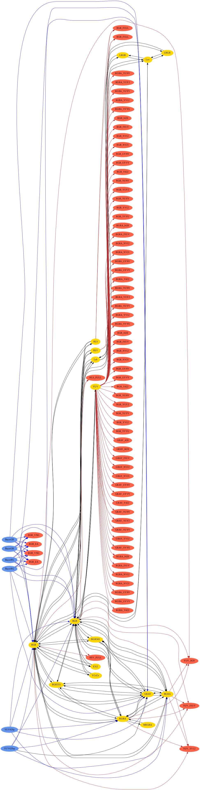

| Safe Haskell | Safe |
|---|---|
| Language | Haskell2010 |
OpenCV.ImgProc.MiscImgTransform.ColorCodes
Contents
- class ColorConversion fromColor toColor
- data ColorCode
- = BayerBG
- | BayerGB
- | BayerGR
- | BayerRG
- | BGR
- | BGR555
- | BGR565
- | BGRA
- | BGRA_I420
- | BGRA_IYUV
- | BGRA_NV12
- | BGRA_NV21
- | BGRA_UYNV
- | BGRA_UYVY
- | BGRA_Y422
- | BGRA_YUNV
- | BGRA_YUY2
- | BGRA_YUYV
- | BGRA_YV12
- | BGRA_YVYU
- | BGR_EA
- | BGR_FULL
- | BGR_I420
- | BGR_IYUV
- | BGR_NV12
- | BGR_NV21
- | BGR_UYNV
- | BGR_UYVY
- | BGR_VNG
- | BGR_Y422
- | BGR_YUNV
- | BGR_YUY2
- | BGR_YUYV
- | BGR_YV12
- | BGR_YVYU
- | GRAY
- | GRAY_420
- | GRAY_I420
- | GRAY_IYUV
- | GRAY_NV12
- | GRAY_NV21
- | GRAY_UYNV
- | GRAY_UYVY
- | GRAY_Y422
- | GRAY_YUNV
- | GRAY_YUY2
- | GRAY_YUYV
- | GRAY_YV12
- | GRAY_YVYU
- | HLS
- | HLS_FULL
- | HSV
- | HSV_FULL
- | Lab
- | LBGR
- | LRGB
- | Luv
- | MRGBA
- | RGB
- | RGBA
- | RGBA_I420
- | RGBA_IYUV
- | RGBA_NV12
- | RGBA_NV21
- | RGBA_UYNV
- | RGBA_UYVY
- | RGBA_Y422
- | RGBA_YUNV
- | RGBA_YUY2
- | RGBA_YUYV
- | RGBA_YV12
- | RGBA_YVYU
- | RGB_EA
- | RGB_FULL
- | RGB_I420
- | RGB_IYUV
- | RGB_NV12
- | RGB_NV21
- | RGB_UYNV
- | RGB_UYVY
- | RGB_VNG
- | RGB_Y422
- | RGB_YUNV
- | RGB_YUY2
- | RGB_YUYV
- | RGB_YV12
- | RGB_YVYU
- | XYZ
- | YCrCb
- | YUV
- | YUV420p
- | YUV420sp
- | YUV_I420
- | YUV_IYUV
- | YUV_YV12
- type family ColorCodeChannels cc :: Nat
- type family ColorCodeDepth srcCode dstCode srcDepth :: DS *
- class ColorCodeMatchesChannels code channels
- bayerBG :: Proxy BayerBG
- bayerGB :: Proxy BayerGB
- bayerGR :: Proxy BayerGR
- bayerRG :: Proxy BayerRG
- bgr :: Proxy BGR
- bgr555 :: Proxy BGR555
- bgr565 :: Proxy BGR565
- bgra :: Proxy BGRA
- bgra_I420 :: Proxy BGRA_I420
- bgra_IYUV :: Proxy BGRA_IYUV
- bgra_NV12 :: Proxy BGRA_NV12
- bgra_NV21 :: Proxy BGRA_NV21
- bgra_UYNV :: Proxy BGRA_UYNV
- bgra_UYVY :: Proxy BGRA_UYVY
- bgra_Y422 :: Proxy BGRA_Y422
- bgra_YUNV :: Proxy BGRA_YUNV
- bgra_YUY2 :: Proxy BGRA_YUY2
- bgra_YUYV :: Proxy BGRA_YUYV
- bgra_YV12 :: Proxy BGRA_YV12
- bgra_YVYU :: Proxy BGRA_YVYU
- bgr_EA :: Proxy BGR_EA
- bgr_FULL :: Proxy BGR_FULL
- bgr_I420 :: Proxy BGR_I420
- bgr_IYUV :: Proxy BGR_IYUV
- bgr_NV12 :: Proxy BGR_NV12
- bgr_NV21 :: Proxy BGR_NV21
- bgr_UYNV :: Proxy BGR_UYNV
- bgr_UYVY :: Proxy BGR_UYVY
- bgr_VNG :: Proxy BGR_VNG
- bgr_Y422 :: Proxy BGR_Y422
- bgr_YUNV :: Proxy BGR_YUNV
- bgr_YUY2 :: Proxy BGR_YUY2
- bgr_YUYV :: Proxy BGR_YUYV
- bgr_YV12 :: Proxy BGR_YV12
- bgr_YVYU :: Proxy BGR_YVYU
- gray :: Proxy GRAY
- gray_420 :: Proxy GRAY_420
- gray_I420 :: Proxy GRAY_I420
- gray_IYUV :: Proxy GRAY_IYUV
- gray_NV12 :: Proxy GRAY_NV12
- gray_NV21 :: Proxy GRAY_NV21
- gray_UYNV :: Proxy GRAY_UYNV
- gray_UYVY :: Proxy GRAY_UYVY
- gray_Y422 :: Proxy GRAY_Y422
- gray_YUNV :: Proxy GRAY_YUNV
- gray_YUY2 :: Proxy GRAY_YUY2
- gray_YUYV :: Proxy GRAY_YUYV
- gray_YV12 :: Proxy GRAY_YV12
- gray_YVYU :: Proxy GRAY_YVYU
- hls :: Proxy HLS
- hls_FULL :: Proxy HLS_FULL
- hsv :: Proxy HSV
- hsv_FULL :: Proxy HSV_FULL
- lab :: Proxy Lab
- lbgr :: Proxy LBGR
- lrgb :: Proxy LRGB
- luv :: Proxy Luv
- mrgba :: Proxy MRGBA
- rgb :: Proxy RGB
- rgba :: Proxy RGBA
- rgba_I420 :: Proxy RGBA_I420
- rgba_IYUV :: Proxy RGBA_IYUV
- rgba_NV12 :: Proxy RGBA_NV12
- rgba_NV21 :: Proxy RGBA_NV21
- rgba_UYNV :: Proxy RGBA_UYNV
- rgba_UYVY :: Proxy RGBA_UYVY
- rgba_Y422 :: Proxy RGBA_Y422
- rgba_YUNV :: Proxy RGBA_YUNV
- rgba_YUY2 :: Proxy RGBA_YUY2
- rgba_YUYV :: Proxy RGBA_YUYV
- rgba_YV12 :: Proxy RGBA_YV12
- rgba_YVYU :: Proxy RGBA_YVYU
- rgb_EA :: Proxy RGB_EA
- rgb_FULL :: Proxy RGB_FULL
- rgb_I420 :: Proxy RGB_I420
- rgb_IYUV :: Proxy RGB_IYUV
- rgb_NV12 :: Proxy RGB_NV12
- rgb_NV21 :: Proxy RGB_NV21
- rgb_UYNV :: Proxy RGB_UYNV
- rgb_UYVY :: Proxy RGB_UYVY
- rgb_VNG :: Proxy RGB_VNG
- rgb_Y422 :: Proxy RGB_Y422
- rgb_YUNV :: Proxy RGB_YUNV
- rgb_YUY2 :: Proxy RGB_YUY2
- rgb_YUYV :: Proxy RGB_YUYV
- rgb_YV12 :: Proxy RGB_YV12
- rgb_YVYU :: Proxy RGB_YVYU
- xyz :: Proxy XYZ
- yCrCb :: Proxy YCrCb
- yuv :: Proxy YUV
- yuv420p :: Proxy YUV420p
- yuv420sp :: Proxy YUV420sp
- yuv_I420 :: Proxy YUV_I420
- yuv_IYUV :: Proxy YUV_IYUV
- yuv_YV12 :: Proxy YUV_YV12
Documentation
class ColorConversion fromColor toColor Source
Valid color conversions described by the following graph:

Minimal complete definition
colorConversionCode
Instances
Names of color encodings
Constructors
type family ColorCodeChannels cc :: Nat Source
Gives the number of channels associated with a particular color encoding
Equations
type family ColorCodeDepth srcCode dstCode srcDepth :: DS * Source
Equations
class ColorCodeMatchesChannels code channels Source
Instances
| ColorCodeMatchesChannels code (D Nat) Source | |
| (~) Nat (ColorCodeChannels code) channels => ColorCodeMatchesChannels code (S Nat channels) Source |